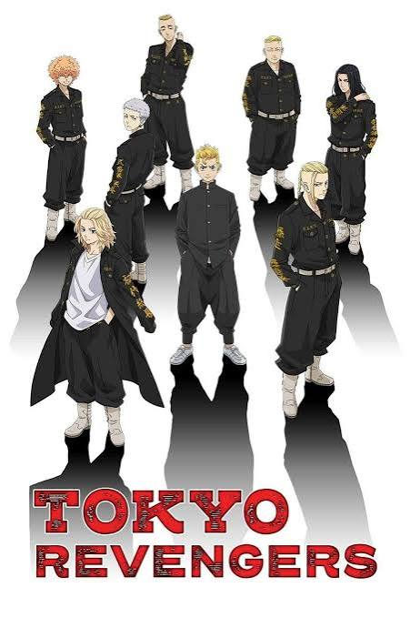

Season 1 (2021)
Takemichi discovers he can time-leap back to his middle-school days and sets out to change the past and save Hinata from the Tokyo Manji Gang's fate.

Action, Drama, School
Takemichi Hanagaki, a 26-year-old part-timer, learns his middle-school ex-girlfriend has died due to the ruthless Tokyo Manji Gang.
Takemichi discovers he can time-leap back to his middle-school days and sets out to change the past and save Hinata from the Tokyo Manji Gang's fate.